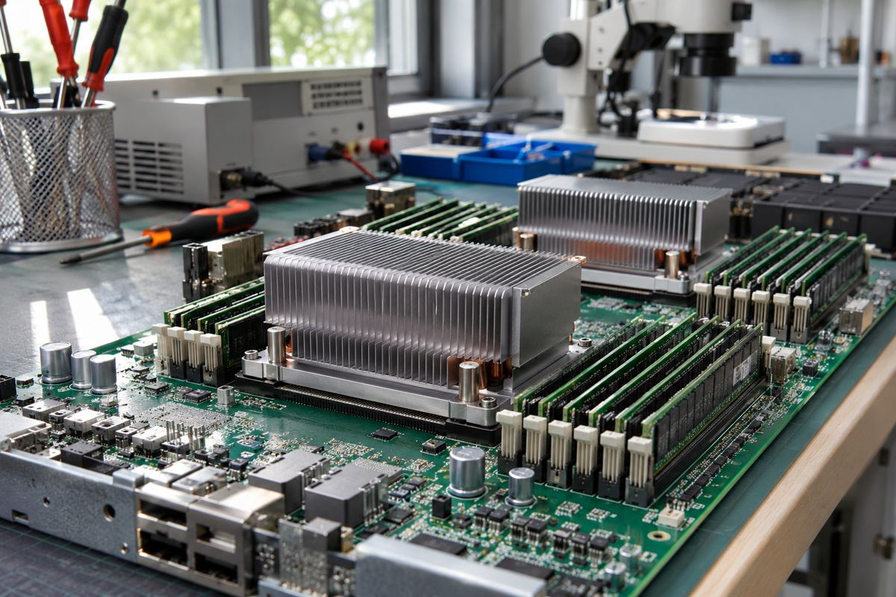
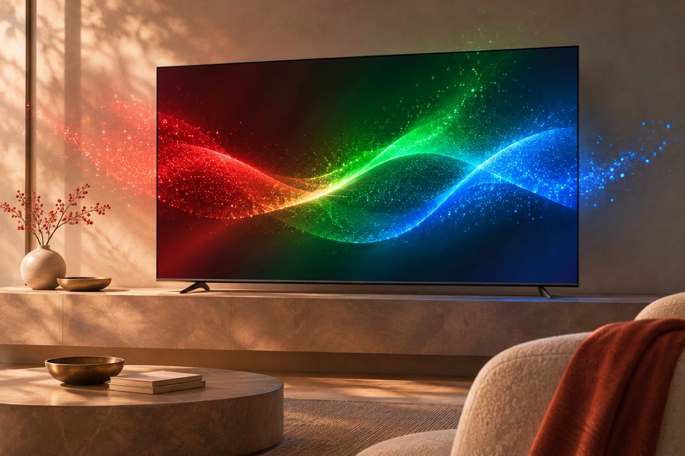
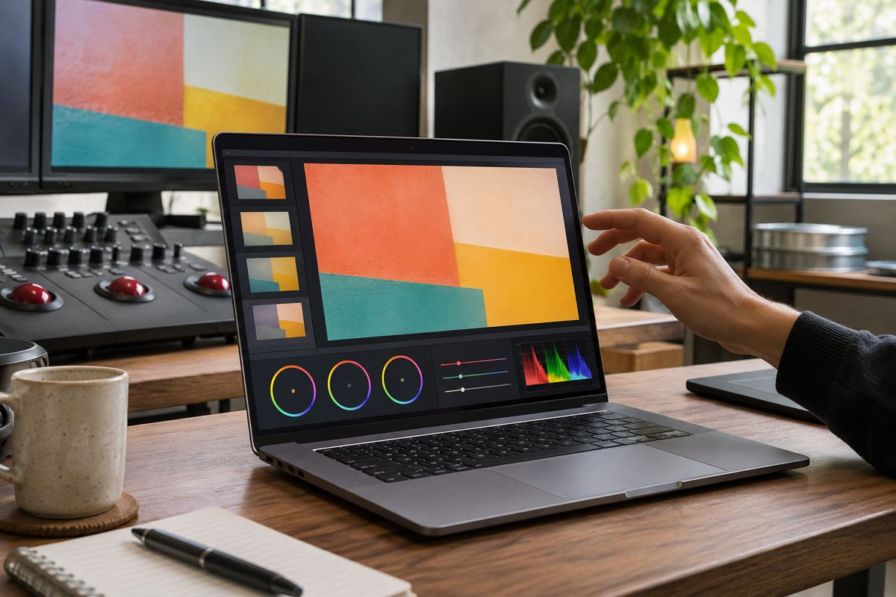
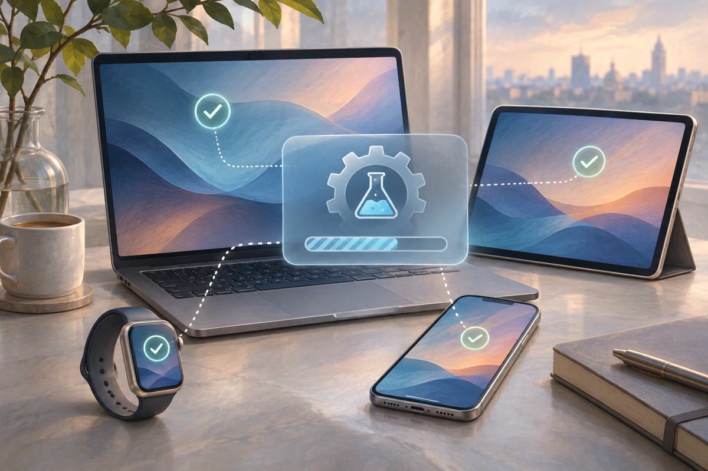
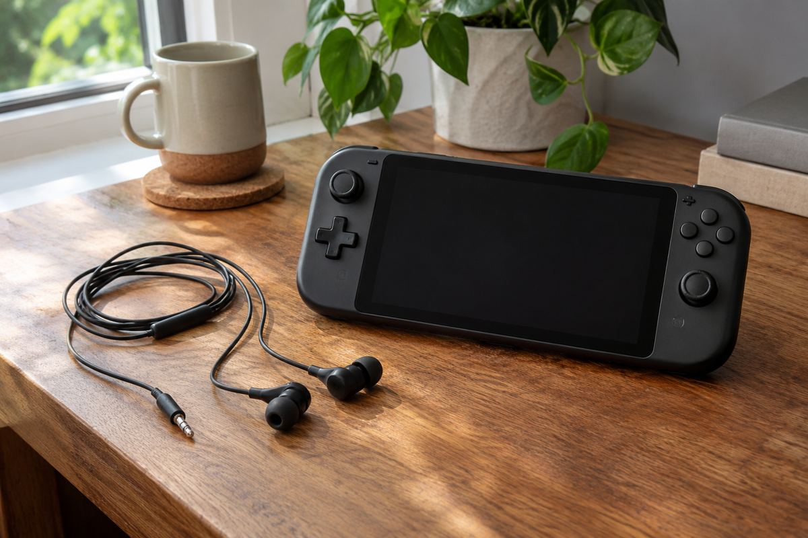
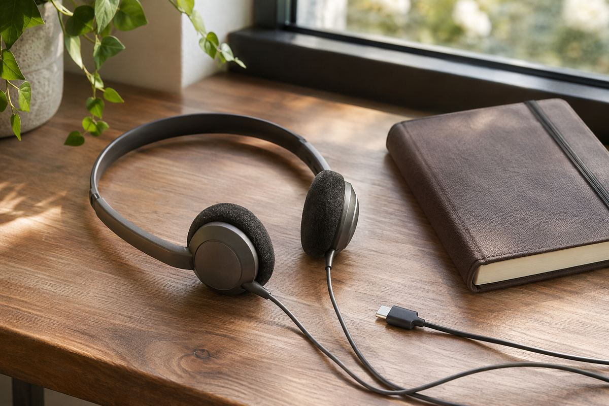
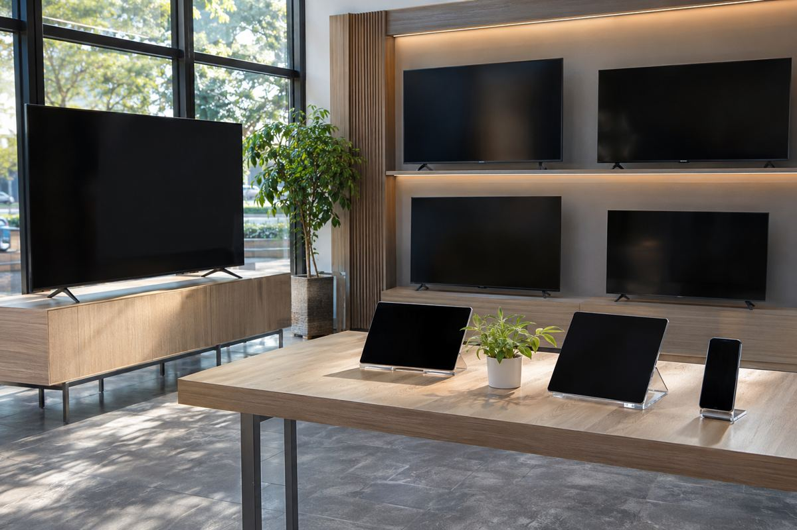
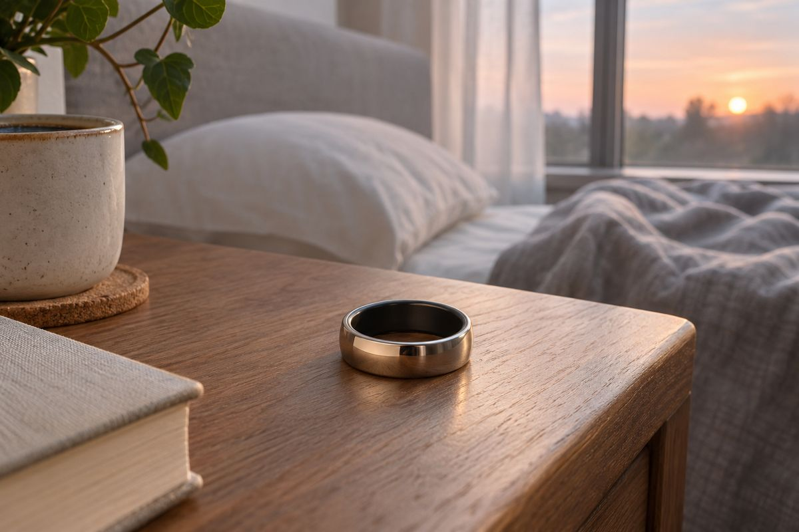
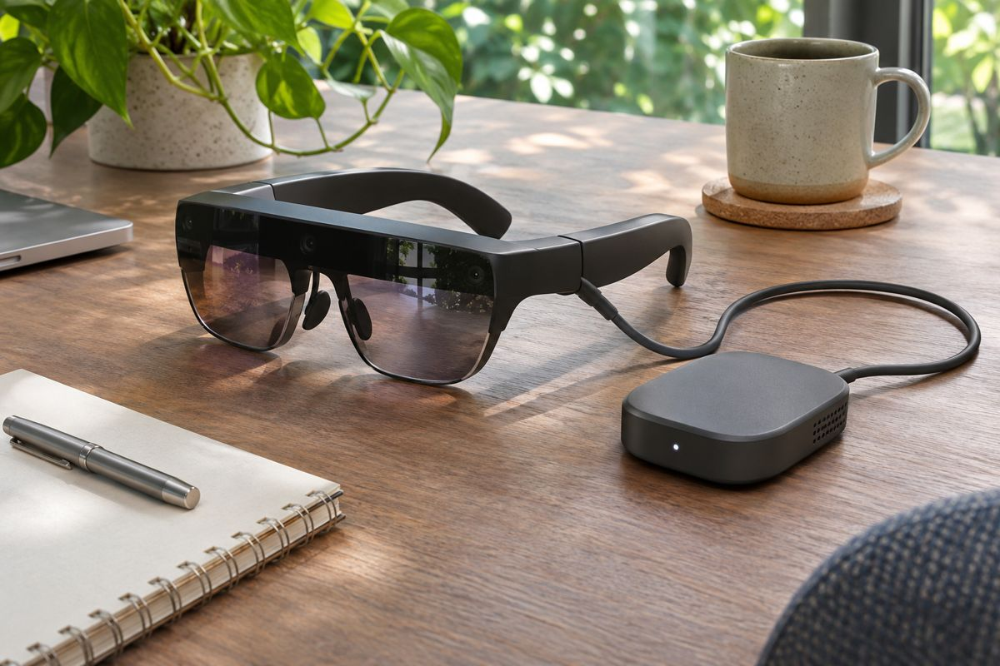
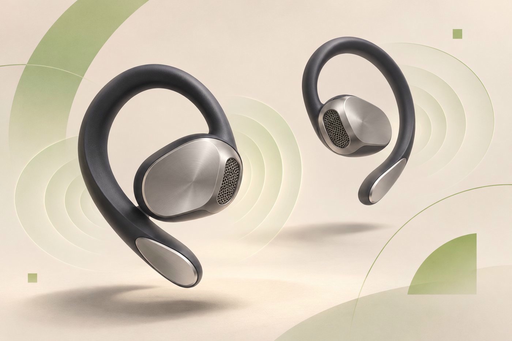

최신 전자기기 뉴스
PC·확장
노트북 밖으로 꺼낸 그래픽카드, ROG XG Station 3가 연결하는 책상
Thunderbolt 5 외장 GPU 도크를 공개했다. 단자 모양보다 노트북의 지원 기능과 전체 구성 비용이 중요하다.
읽기 ↗
최신 전자기기 뉴스
PC·확장
Thunderbolt 5 외장 GPU 도크를 공개했다. 단자 모양보다 노트북의 지원 기능과 전체 구성 비용이 중요하다.
읽기 ↗
모니터
ASUS가 24.5인치 FHD OLED 두 모델을 소개했다. 주사율과 픽셀 응답시간, 게임의 프레임률을 나눠 봤다.
읽기 ↗그래픽카드
ASUS가 게임 협업판을 공개했다. 소장 가치와 냉각 구조, 실제 성능을 각각 판단할 필요가 있다.
읽기 ↗PC·메모리
ASUS가 로컬 AI용 UGen 카드를 공개했다. 게임용 카드와 다른 메모리·소프트웨어 조건을 살펴봤다.
읽기 ↗
Windows
마이크로소프트가 반응성과 메모리 개선을 소개했다. 업데이트 효과와 메모리 증설의 역할을 함께 살펴봤다.
읽기 ↗
PC·보안
마이크로소프트가 보안 업데이트의 발견·검증·배포 방식을 설명했다. 수정 개수와 내 PC의 보호 상태는 같은 지표가 아니다.
읽기 ↗미니 PC
9월 발표에서 11월 공급을 예고한 소형 PC다. 통합 메모리와 실제 판매 구성을 구분해 살펴봤다.
읽기 ↗
촬영·오디오
11월 유럽 판매를 예고했다. 넓은 기록 범위가 마이크 배치와 현장 모니터링까지 대신하는 것은 아니다.
읽기 ↗
휴대용 오디오
소니가 NW-WM1ZM3와 NW-WM1AM3의 유럽 판매를 예고했다. 재료 설명과 청음 평가는 분리해서 읽을 필요가 있다.
읽기 ↗주변기기·산업
매출 증가와 별개로 부품 공급 문제가 다음 분기 전망에 반영됐다. 제품 수요와 공급을 나눠 읽었다.
읽기 ↗오디오
유럽에서 11월 판매를 예고했다. 충전·페어링 부담을 줄이는 대신 USB 오디오 호환성과 개방형 구조를 살펴봐야 한다.
읽기 ↗게이밍 오디오
90도 단자로 가로 화면 게임의 케이블 간섭을 줄이는 설계다. PC 전용 기능과 방수 등급의 범위를 구분해야 한다.
읽기 ↗스마트폰 카메라
공식 발표의 최고 표현에는 평가한 기기라는 범위가 붙는다. DXOMARK 원문에서는 장점과 어두운 환경의 한계가 함께 확인된다.
읽기 ↗
유통·구매 조건
11월 4일 공개한 혜택은 영국 조건이다. 결제 할인·보상판매·추후 캐시백의 차이와 서로 다른 마감일을 읽어야 한다.
읽기 ↗반도체
11월 3일 발표한 3분기 실적은 9월 26일 종료 기간의 결과다. 데이터센터·PC·게임의 서로 다른 수요를 나눠 읽었다.
읽기 ↗
웨어러블
삼성전자는 11월 3일 갤럭시 링 지원을 발표했다. 미국 FDA 기록과 제품 공지를 함께 읽어 기능 범위와 배포 시점을 구분했다.
읽기 ↗
확장현실
Google이 10월 28일 공개한 일정상 일본 주문은 11월 2일 시작된다. 유선 연결과 앱 지원 범위가 실제 활용을 좌우한다.
읽기 ↗노트북
Apple이 10월 28일 발표한 14·16인치 PROLED XDR 모델은 M5 Pro 또는 M5 Max를 쓴다. 화면에 붙은 숫자와 작업 환경을 함께 봐야 한다.
읽기 ↗데스크톱
Apple은 10월 27일 M6를 탑재한 24인치 iMac을 공개했다. 칩의 세대 변화와 책상 위 구성을 함께 따져봤다.
읽기 ↗태블릿
새 iPad mini는 A20 Pro와 OLED를 탑재했다. 작은 태블릿에서 화면 크기, 반사와 이동 중 연결을 함께 고려할 만하다.
읽기 ↗디스플레이
삼성전자가 기술 소개 영상을 공개했다. RGB 광원과 화면 처리, 표면 특성은 각각 다른 문제를 다룬다.
읽기 ↗소프트웨어
Apple이 개발자 프리뷰를 공개했다. 사용자가 모든 앱 기능을 즉시 음성으로 쓸 수 있다는 뜻은 아니다.
읽기 ↗업데이트
iPhone부터 Mac·Watch까지 개발자 시험 단계가 시작됐다. 베타 알림은 정식 업데이트 권고와 다르다.
읽기 ↗오디오
소니가 기존 휴대용 스피커에 새 색상을 더했다. 배터리와 방진·방수 표기에는 각각 시험 조건이 붙는다.
읽기 ↗
오디오
Samsung Mobile Press가 Galaxy Buds On의 미국 출시를 알렸습니다. 오픈이어 청취 경험을 강조한 제품입니다.
읽기 ↗